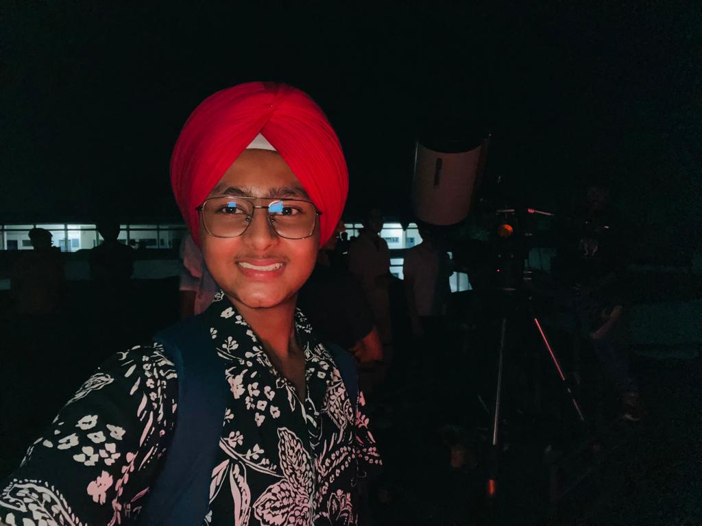
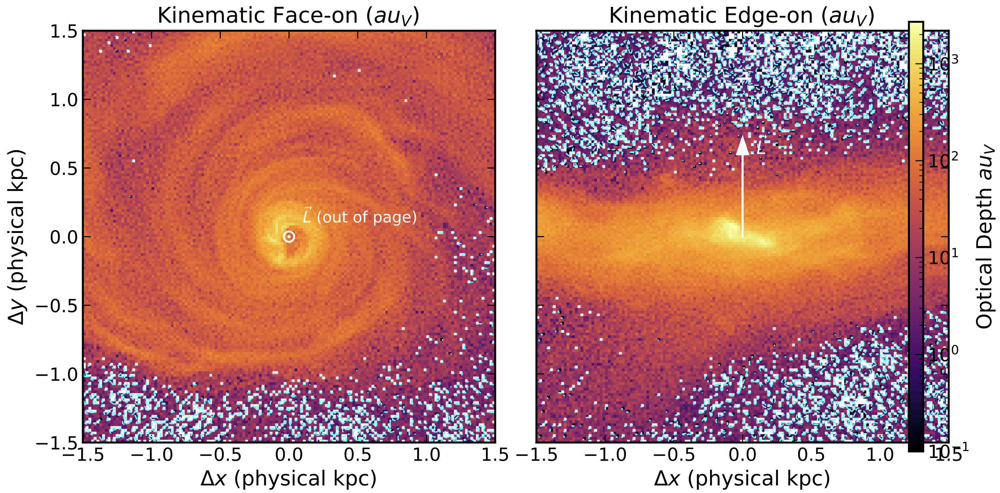
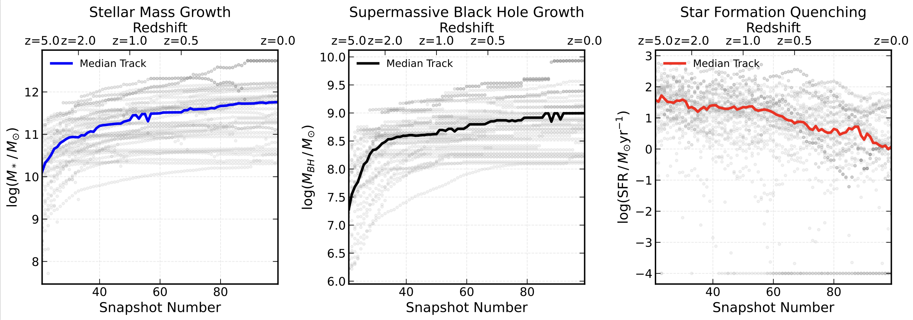

Jashanpreet Singh Dingra / astrodingra

Status: MSc Physics (FYIP) @ Guru Nanak Dev University, Amritsar.
Focus: AGN feedback, High-z galaxies, Galaxy morphology, Machine learning.
Roles: Founder of Dingrastro Club, ISRO Space Tutor, Astropy contributor, Founder & CTO of Sitee.
I study how supermassive black holes shape the galaxies around them. I use JWST observations and cosmological simulations like IllustrisTNG and EAGLE to follow early-universe galaxies forward in time, and I build open-source pipelines and ML tools to do it at scale.
Now
# tracing JWST "Little Red Dots" to z=0 in IllustrisTNG (w/ MPIA Heidelberg)
# AGN multiwavelength study in SDSS (w/ Copernicus Center, Warsaw)
# shipping Galamo, Galspar, RAGA, vdisp_fit
# building Sitee and Brepline
Publications
Manuscripts under review and ongoing international work.
A Unified Deep Learning Framework for Automated Morphological Classification and Photometric Analysis using DECaLS Legacy Imaging
Powers Galamo, an open-source package for morphology, kinematics, photometry and spectra. [galamo.org]

Black hole mass and galaxy dynamics in Seyfert Type II and LINER galaxies
First presentation of the MBH-σ correlation for Seyfert Type II, despite obscuration from the nuclear dust and torus.
The Evolutionary Destiny and Observational Deficits of JWST "Little Red Dot" Analogues in IllustrisTNG
Tracked to z=0, these anomalies look like the direct progenitors of today's massive BCGs, and radiatively efficient AGN feedback explains their rapid quenching. Supported by an IUCAA Pegasus Cluster computing grant.


Exploring Active Galactic Nuclei in SDSS: A Multiwavelength Study
Software
- Galamo [galamo.org]
- Astropy
- Texwolf [Zenodo]
More pipelines (Galspar, RAGA, vdisp_fit, PFVG) are in the research popup.
Startups
Funded ventures where I am Founder & CTO.
Sitee
An AI platform that generates full-stack websites from natural-language prompts, powered by a custom 1.2B+ parameter LLM.- Vector databases (FAISS, Pinecone) for context retrieval and code generation.
- Scalable AI workflows from prompt to deployed site.
Brepline
A 7.9B+ parameter multimodal model for AI-driven 3D modelling. It generates parametric CAD in STEP/B-Rep formats from prompts and sketches.- Custom SolidWorks plugins for AI-assisted design and parameter editing.
- Automated engineering workflows.
Conferences & Impact
Wins
- AlgOlympia (2026): Winner, national hackathon, Chandigarh University. 50,000 INR.
- HACKOWASP 7.0 (2025): Runner up, TIET, North India's biggest hackathon. 150,000 INR.
- Ideathon (2025): Winner, GNDU Golden Jubilee Center. 15,000 INR.
- Ad Astra (2025): 2nd runner up, NIT Jalandhar. 5,000 INR.
- ICNPA 2024: Best Oral Presentation, New Delhi.
Talks & presentations
- Advances in Cosmology, Christ University, Bangalore (2025)
- National Conference on AGN, CUHP (2025)
- Invited speaker, Star Party, The Millennium School, Patiala (2025)
- 68th Symposium on Nuclear Physics, IIT Roorkee (2024)
- Astronomy Webinar, Astronomy Club, Kosovo (2023)
Schools, workshops & hackathons
- 2026: IISER Mohali intro school; HiSTAR (IUCAA); UVIT/HST/JWST school, Kerala; ESA workshop on ML & galaxy classification, ESAC Spain
- 2025: ZTF Summer School (Minnesota); IIST IAAS; GW Astronomy, ICTS-TIFR; MCNS space science data school; AdventureX final round, Hangzhou, China; 4th BINA conference
- 2022: Pulsar data analysis, HEASARC (NASA)
Earlier honours
- JEE Mains AIR 231 (2024); NSEA Scholar (2023)
- Breakthrough Junior Challenge finalist; IAAC Bronze Honours (2021)
- Astronomy Photographer of the Year shortlist; South Downs astrophotography runner up (2021)
- IAAC Ambassador (2024 - now); ISRO Space Tutor (2023 - now)
Education & Resources
MSc Physics (FYIP), Guru Nanak Dev University - CGPA 7.8/10 (2024 - now). Before that, The Millennium School, Patiala (84.2%) and The Kaintal School (94.4%).
- Computational Astrophysics / AGN Analysis: an online graduate lecture series on galaxy astrophysics. [Watch on YouTube]
- Python for Astronomy: an eBook on processing and analysing astrophysical data. [Read eBook PDF]
- Dingrastro Club: a global astronomy community I founded, 200+ members.
Contact
Email: astrodingra@gmail.com
GitHub: github.com/dingra11
Phone: +91 8847242013